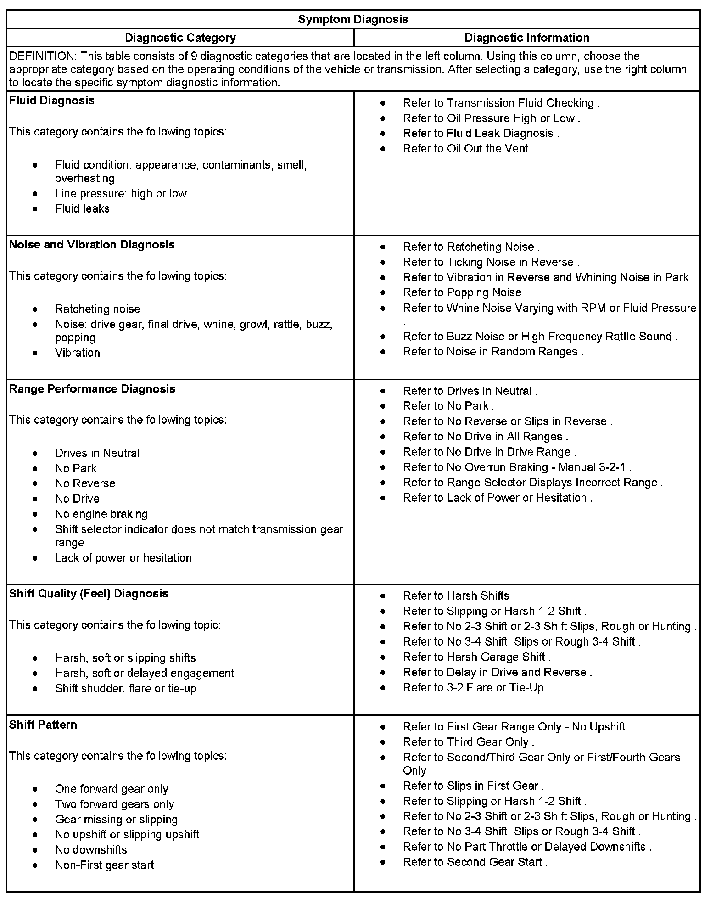
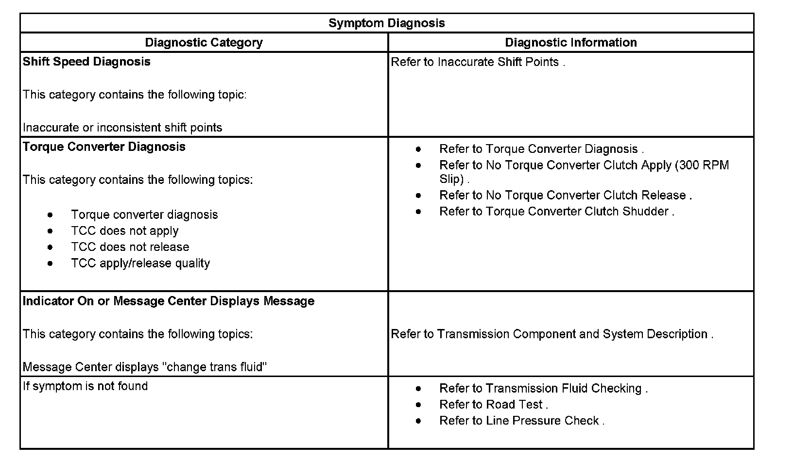

Operation CHARM
: Car repair manuals for everyone.
Home
>>
Cadillac
>>
2007
>>
Escalade ESV AWD V8-6.2L
>>
Repair and Diagnosis
>>
Transmission and Drivetrain
>>
Automatic Transmission/Transaxle
>>
Testing and Inspection
>>
Symptom Related Diagnostic Procedures
>>
4L60-E/4L65-E/4L70-E Automatic Transmission
>>
- Symptoms - Automatic Transmission
- Symptoms - Automatic Transmission
Symptoms - Automatic Transmission
Symptoms - Automatic Transmission 1:

Symptoms - Automatic Transmission 2:
